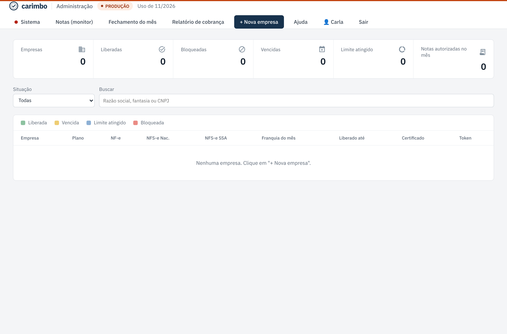
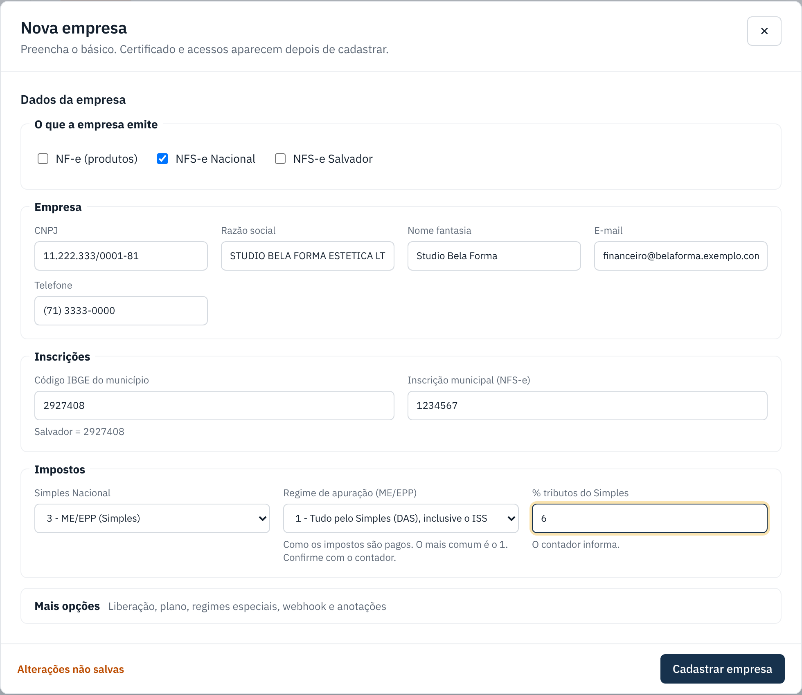
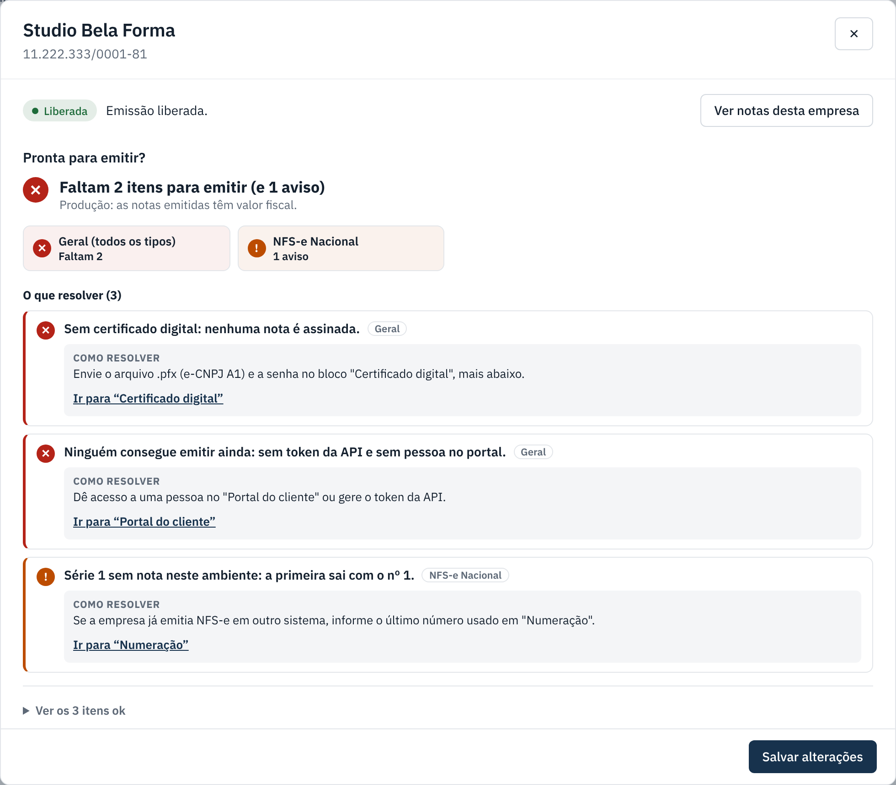
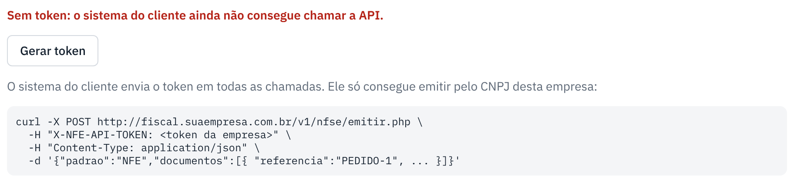

Cadastrar uma nova empresa
Cadastre o cliente uma vez: dados, impostos, plano e o que ele emite. Depois a própria ficha diz o que falta para emitir.
checklist Antes de começar
- Tenha em mãos: CNPJ, razão social, inscrição municipal (para NFS-e) e, se for NF-e, UF e inscrição estadual.
- Pergunte ao contador do cliente: se é do Simples Nacional, como paga os impostos e o percentual aproximado de tributos.
- Nunca chute CNPJ ou dados fiscais: confirme com o cliente.
-
Clique em "+ Nova empresa"
No topo do painel, clique em + Nova empresa.

-
Preencha os dados
- O que a empresa emite: marque só o que ela contratou (NF-e, NFS-e Nacional, NFS-e Salvador). Os campos que não servem somem sozinhos.
- Empresa: CNPJ, razão social, nome fantasia, e-mail e telefone.
- Inscrições: código IBGE do município (Salvador = 2927408) e inscrição municipal.
- Impostos: "Simples Nacional" e, se for ME/EPP, o regime de apuração e o % de tributos do Simples (o contador informa).

-
Ajuste plano, limite e liberação (Mais opções)
Em Mais opções ficam: Emissão liberada (desmarque para bloquear, e escreva o motivo que o cliente vai ver), Liberado até (vencimento do contrato), Plano, Limite de notas por mês, regimes especiais, webhook e anotações internas.

-
Clique em "Cadastrar empresa" e veja o que falta
A ficha da empresa abre com o quadro Pronta para emitir?, que lista o que falta. Cada item tem Como resolver e um link Ir para que leva até o lugar certo.
Siga em Certificado e "pronta para emitir".

Integração por sistema (token da API)
Se o cliente vai emitir pelo sistema dele (ERP, loja), abra Acesso à API (token) na ficha e clique em Gerar token. O token aparece uma vez só: copie e mande para quem cuida do sistema do cliente. Se o cliente só usa o portal, não precisa de token.

Se der errado
| O que aconteceu | O que fazer |
|---|---|
| Erro de CNPJ ao cadastrar. | Confira os números. O sistema confere os dígitos. |
| Não aparece o campo de inscrição estadual. | Marque NF-e (produtos) em "O que a empresa emite". |
| Preciso bloquear um cliente (ex.: falta de pagamento). | Abra a ficha, em Mais opções desmarque Emissão liberada, escreva o motivo e clique em Salvar alterações. O cliente vê o motivo no portal. |